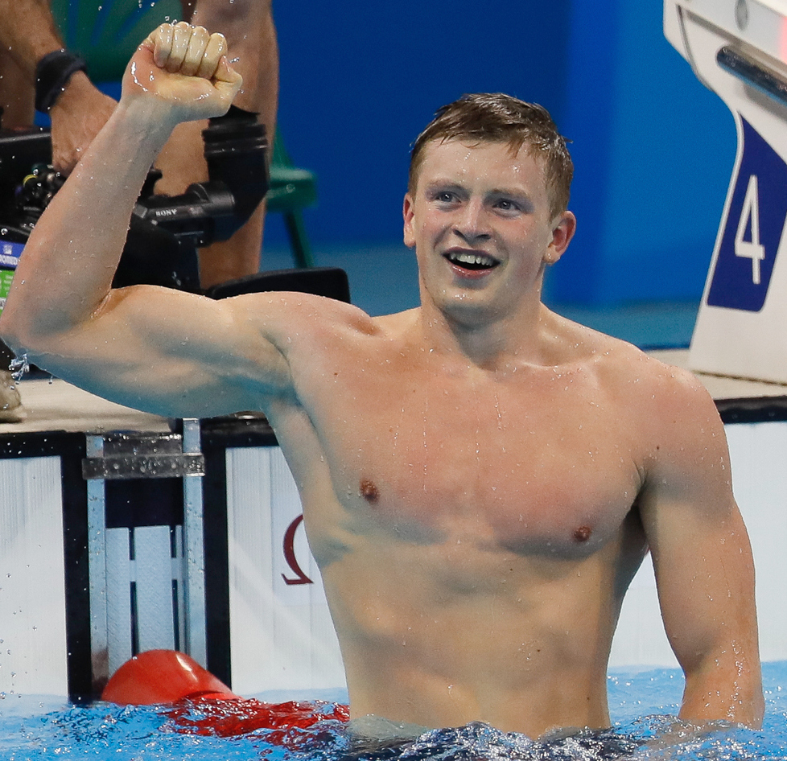
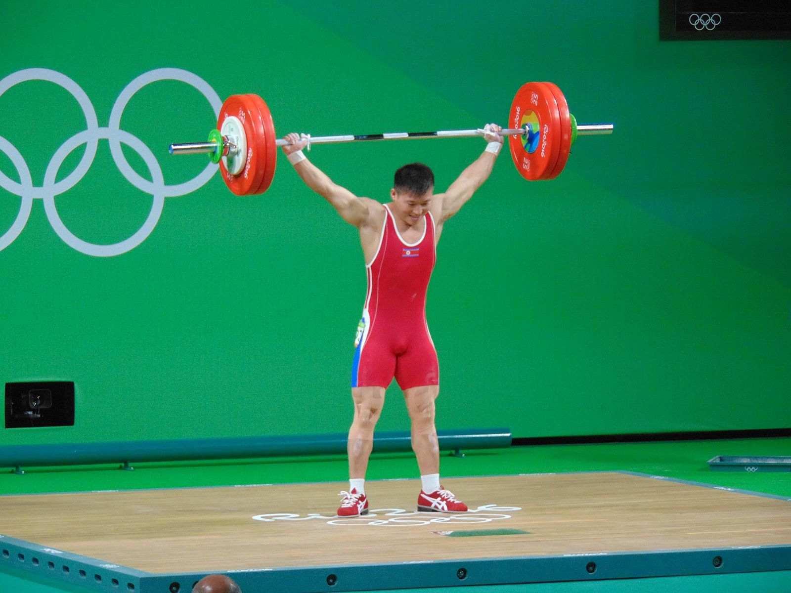
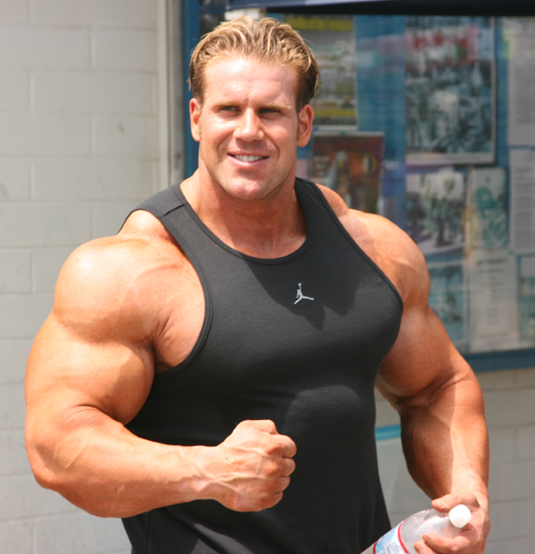

Resistance training for athletes
Athletes should practice range of motion for their sport. Training phases will vary. These may include explosivity, stength, hypertrophy, rehearsal, and more. Resistance training should be supplemental, and not exceed the maximum recoverable volume.

Adam Peaty Rio 2016.jpg WikiMedia Commons
Strength Training
When training for strength the goal is often proficiency in a specific movement pattern. The classic examples are squat, bench press, and deadlift. When adding explosivity the emphasis changes from powerlifting to olympic weight lifting, with the clean and the snatch as primary movements.

Rio 2016 - Weightlifting men's 69 kg (29049391600).jpg WikiMedia Commons
Hypertrophy Training
Hypertrophy is the increasing of muscle fiber size within an individual. The athletes who train for this the most are professional body builders. This is seen in many distinct training styles. Diet is a huge factor in this process. Recent trends have shown that stretching the muscles with load is optimal for hypertrophy.

Jay Cutler at Muscle Beach 2007.jpg WikiMedia Commons
Resistance Training for Longevity
Longevity training is also known as lifetime activity training. Typically this will include what are referred to as functional movemnets. These rehearse everyday movements and activities. The main goal of athletes in this category is to prevent injury and prolong quality of life. This is where you hear the quote "If you have a body you're an athlete."
P060598-420352.jpg WikiMedia Commons